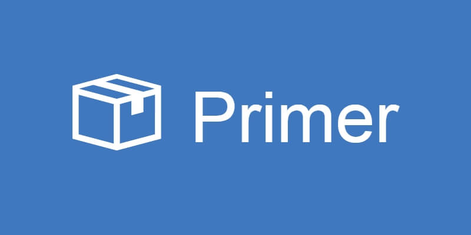

Применение primer
Отступы
Помошь в настройке отступов в primer реализованна с помошью заготовленных классов.
Классы m - margin отвечают за внешние отступы.
Классы p - padding отвечают за внутренние отступы.
Добавление букв l, r, t, b, x, y - применяют классы в направлении: лево, право, вверх, вниз, горизонтально, вертикально соответственно.
При отсутствии направления отступ применяется ко всем сторонам объекта.
После тире пишется размер отступа цифрами от 0 до 12:
Пример: объект который выглядит так:
После добавления класса py-7 будет выглядеть вот так:

Классы m - margin отвечают за внешние отступы.
Классы p - padding отвечают за внутренние отступы.
Добавление букв l, r, t, b, x, y - применяют классы в направлении: лево, право, вверх, вниз, горизонтально, вертикально соответственно.
При отсутствии направления отступ применяется ко всем сторонам объекта.
После тире пишется размер отступа цифрами от 0 до 12:
| primer | размер | primer | размер |
|---|---|---|---|
| 0 | 0px | 1 | 4px |
| 2 | 8px | 3 | 16px |
| 4 | 24px | 5 | 32px |
| 6 | 40px | 7 | 48px |
| 8 | 64px | 9 | 80px |
| 10 | 96px | 11 | 112px |
| 12 | 128px |
Анимации
На данном сайте при загрузке воспроизводится анимация
наведитесь (пк) или тапните (на талефоне)
наведитесь (пк) или тапните (на талефоне)
Цветовые темы
Цветовая тема сайта подстраивается под тему выбранную в системе. это происходит благодаря комбинации команд:
data-light-theme="light" data-dark-theme="dark" data-color-mode="auto"